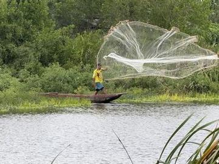
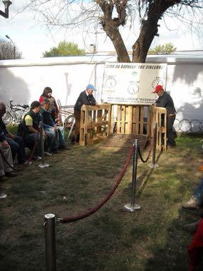
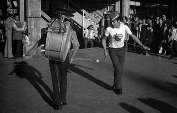
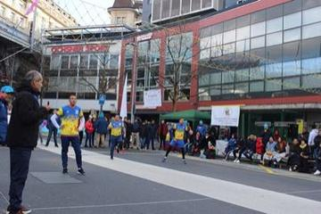
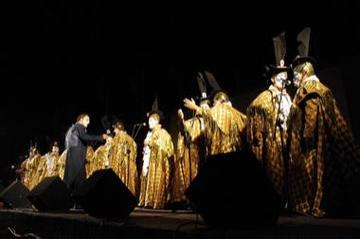

Cradle of culture
The Americas: Andes and South America
The Andes, the Amazon and the southern cone.
Deep Past and First Games 2
Glass marbles
Ecuador · Dexterity and skill gamesTaba
Bolivia +1 · Board and table games
River Valleys and First Cities 4

Generala
Argentina +2 · Board and table gamesCacho
Bolivia +3 · Board and table gamesColombian Parqués
Colombia · Board and table gamesDudo / Cacho
Peru · Board and table games
Classical Worlds 4

Circle Dodgeball
Brazil +3 · Archery, throwing and target games
Joropo llanero band
Venezuela +1 · Musical instruments
Paraguayan Harp
Paraguay · Musical instruments
Payada
Argentina +1 · Wrestling and martial sports
Crossroads and Golden Ages 3

Charango
Bolivia +1 · Musical instrumentsLotería
Venezuela · Board and table gamesRing jousting
Paraguay · Street and playground games
Age of Contact and Craft 3

Bandoneon and tango rhythm
Argentina +1 · Musical instruments
Bolas criollas
Venezuela · Board and table gamesTruco
Brazil +1 · Card games
Modern Heritage 14

Atarraya
Colombia · Dexterity and skill games
Chilean Rayuela
Chile · Archery, throwing and target games
Chinchinero Drum Walk
Chile · Performance and storytelling
Tejo
Colombia · Archery, throwing and target games
Uyuni Salt Harvest
Bolivia · Puzzles and mind gamesChaza
Colombia · Street and playground gamesEmboque
Chile · Dexterity and skill gamesFireball
Paraguay · Street and playground gamesFrog toss
Ecuador · Dexterity and skill gamesManteo
Bolivia · Street and playground gamesPerinola
Venezuela · Dexterity and skill gamesRana
Colombia · Dexterity and skill gamesSapo
Peru +2 · Dexterity and skill gamesYermis
Colombia · Street and playground games
Living Traditions 12

Bottle Dance
Paraguay +1 · Dances
Caballito de totora
Peru · Crafts and making
Cueca
Chile +2 · Dances
Ecuavoley
Ecuador · Other traditions
Frevo Umbrella Dance
Brazil · Dances
Jangada Sailing
Brazil · Crafts and making
Malambo
Argentina · Dances
Marinera Norteña
Peru · Dances
Mate Pouring
Argentina · Crafts and making
Murga Uruguaya Carnival Troupe
Uruguay · Crafts and making
Nanduti
Paraguay · Crafts and making
Toquilla straw hat weaving
Ecuador · Crafts and making